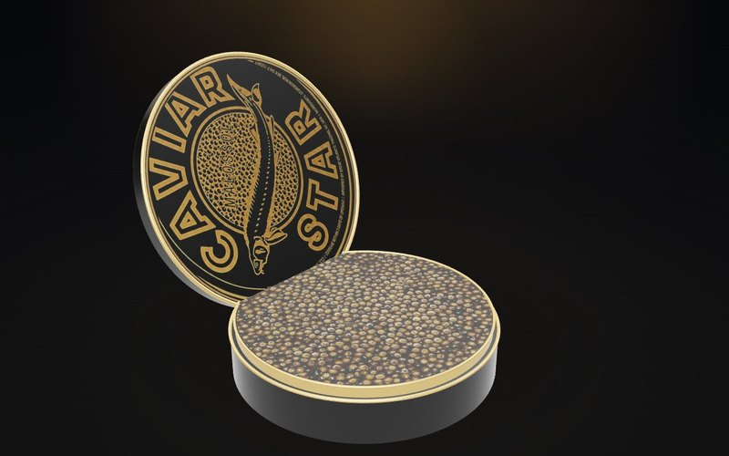
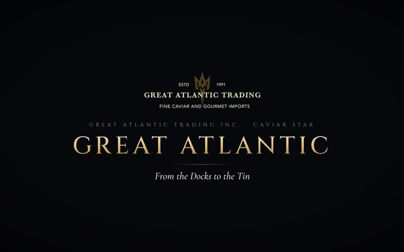
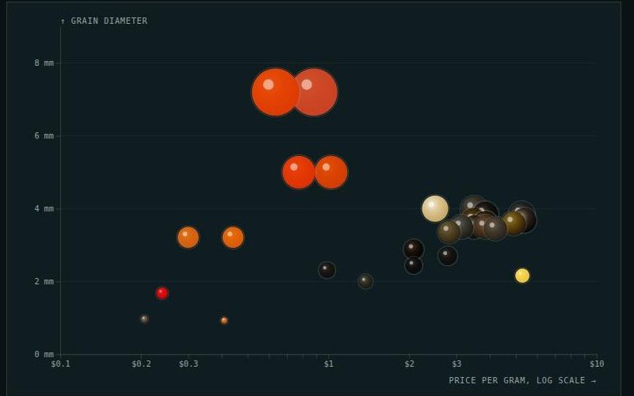
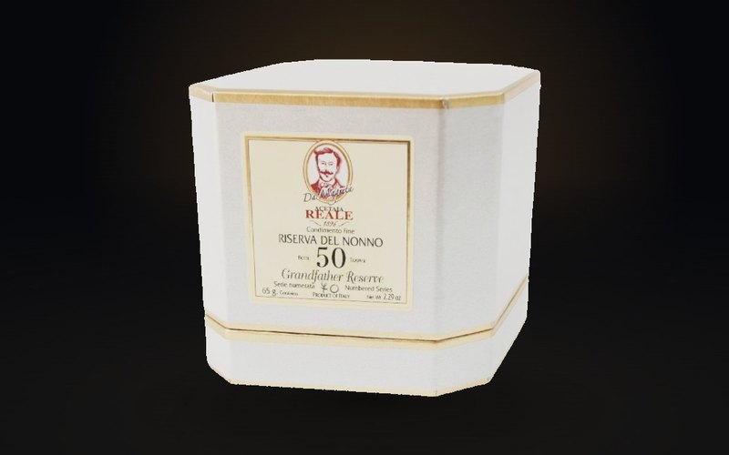
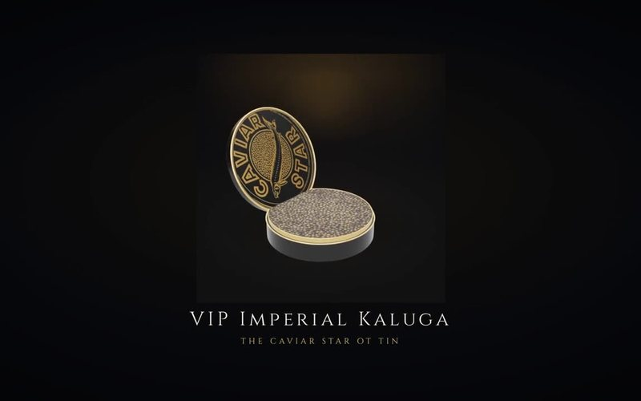
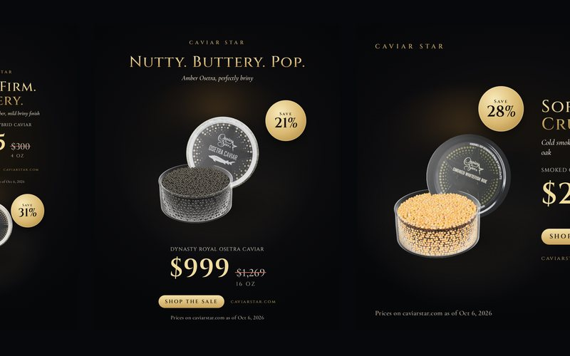
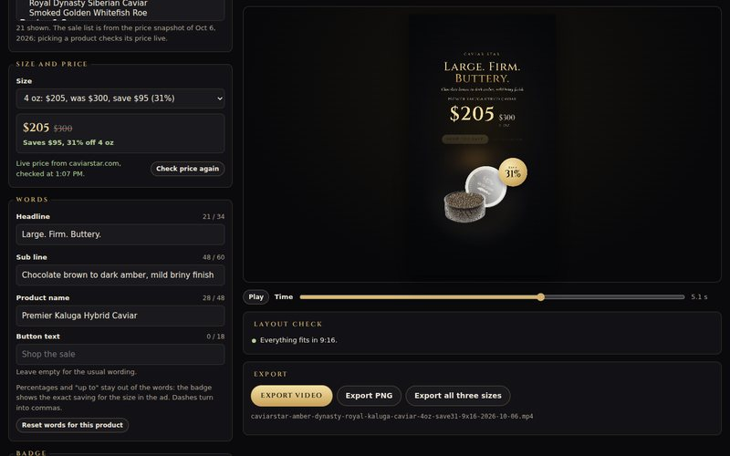

Every product in the shop rebuilt in 3D, your story told as a fifteen-minute film, an interactive guide to every caviar you sell, sale ads for social, and a tool to make the next ones yourself. All of it made from your own photographs and your own words.

Every caviar, oil, vinegar, truffle and spoon in the shop, on a live stage you can turn by hand. Each caviar sits in its own jar under its own lid.

The story of the family business: urchin diving in Portland, the fish markets of Japan, the move to Ocean Isle Beach, and the caviar that leaves it today. Eight chapters, with captions.

Where each roe comes from, every pearl drawn to scale in its real colour, the species behind it, and a quiz that ends at the right tin.

A ten-second loop of every product, turning in the light. Ready for product pages, ads and stories.

Fifty seconds of the collection in motion, cut vertical for Instagram, TikTok and Shorts, and landscape for the web.

Every caviar on sale plus serving pieces and a collection ad, as motion and stills for Stories, Feed and Square, with paste-ready Meta and TikTok copy. Every price checked against the store, every saving rounded down.

Pick any product and size, it loads the store's price and compare-at price, write a headline, and export the video in all three sizes. The next sale takes minutes, not a designer.
Building these meant reading every product page, the 2026 catalog and about sixty of your blog posts. A few small things turned up that are quick to fix.